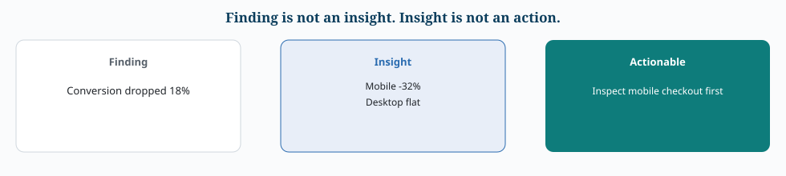

Part I — Foundations
1.1 What Is Data Storytelling?
Data storytelling هو آلية للتواصل مع الـ insights باستخدام ثلاثة عناصر مترابطة: Data + Narrative + Visuals.
الهدف ليس "تجميل الأرقام" أو تغيير معنى النتائج، بل جعل الـ insight واضحًا، مفهومًا، قابلًا للتذكر، ومرتبطًا بسياق القرار.
لماذا نحتاجه؟
التحليل الممتاز لا يضمن Impact. يمكن أن تكون البيانات صحيحة والنموذج قويًا، لكن يفشل المشروع إذا لم يفهم أصحاب المصلحة: ماذا وجدنا؟ لماذا يهم؟ ما حجم الأثر؟ ما حدود النتيجة؟ ماذا يجب أن نفعل؟
القصة الجيدة تقلل المسافة بين analysis → understanding → decision → action.
Data Storytelling ≠ Spin
لا يعني انتقاء أرقام تخدم رأيًا مسبقًا أو إخفاء النتائج غير المريحة. القصة الجيدة يجب أن تكون:
- Simple: رسالة أساسية واضحة بعد إزالة التفاصيل غير الضرورية.
- Concrete: يمكن وصفها بمثال أو ملاحظة ملموسة.
- Credible: قابلة للاختبار ومبنية على بيانات وتحليل موثوقين.
- Actionable: تقود إلى قرار أو خطوة عملية عندما يكون ذلك مناسبًا.
1.2 The Three Core Elements
Data
البيانات هي الدليل. استخدم فقط findings المرتبطة بالمشكلة والموثوقة بما يكفي لدعم الرسالة.
إذا كانت البيانات أو التحليلات غير موثوقة، فإن القصة تصبح غير موثوقة مهما كانت طريقة عرضها ممتازة.
Actionable Insight
ليس كل finding insight مفيدًا. الـ actionable insight يجيب ضمنيًا: What does this finding enable us to do?
مثال:
- Finding: conversion dropped 18%.
- Insight: mobile conversion dropped 32% while desktop remained stable.
- Actionable insight: investigate the mobile checkout experience first because it is the largest identifiable driver.


Narrative
الـ narrative هو تنظيم الحقائق في تسلسل يجعل الجمهور يفهم المشكلة → الأدلة → الاستنتاج → الأثر → الإجراء. لا تحوّل التقرير إلى قائمة disconnected facts. يجب أن تدور القصة حول central insight / Big Idea.
Visuals
الـ visualization ليست decoration. وظيفتها تقديم evidence أو pattern بطريقة تجعل الرسالة أسهل وأسرع في الفهم.
1.3 The Three-Minute Story & the Big Idea
Three-Minute Story
تخيل أن لديك ثلاث دقائق فقط. ما الذي يجب أن يبقى؟
- المشكلة أو السؤال.
- أهم finding.
- أهم evidence.
- business impact.
- recommendation / next step.
إذا احتجت عشرات النقاط لتفسير رسالتك، غالبًا لم تحدد الـ core message بعد.
Big Idea
الـ Big Idea هي وجهة النظر الأساسية للقصة في جملة واحدة.
مثال ضعيف: "We analyzed sales data."
مثال أقوى: "The decline in chocolate sales is the primary driver of the company's profit deterioration, and targeted rebranding could reverse part of the loss."